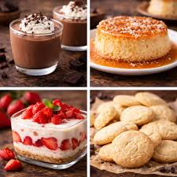
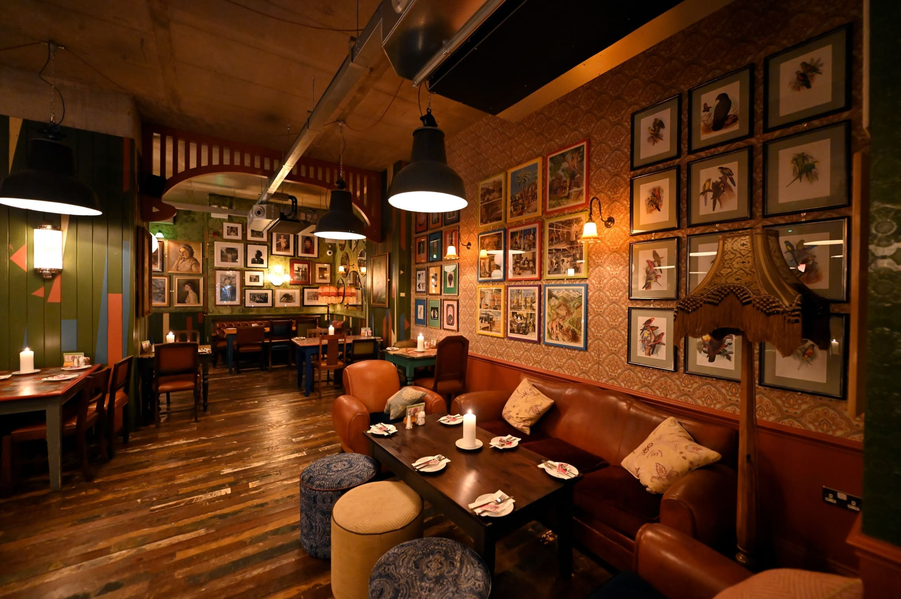

Bienvenidos a El Cafetín Gourmet
El lugar donde el aroma del café recién hecho se mezcla con un ambiente acogedor, sabores artesanales y una experiencia única para los amantes del buen café.
Ver nuestro menúCafé Artesanal
Granos seleccionados y tostados localmente para un sabor inolvidable.

Postres Caseros
Repostería fresca todos los días, hecha con ingredientes de calidad.

Ambiente Acogedor
Un espacio perfecto para estudiar, trabajar o compartir con amigos.